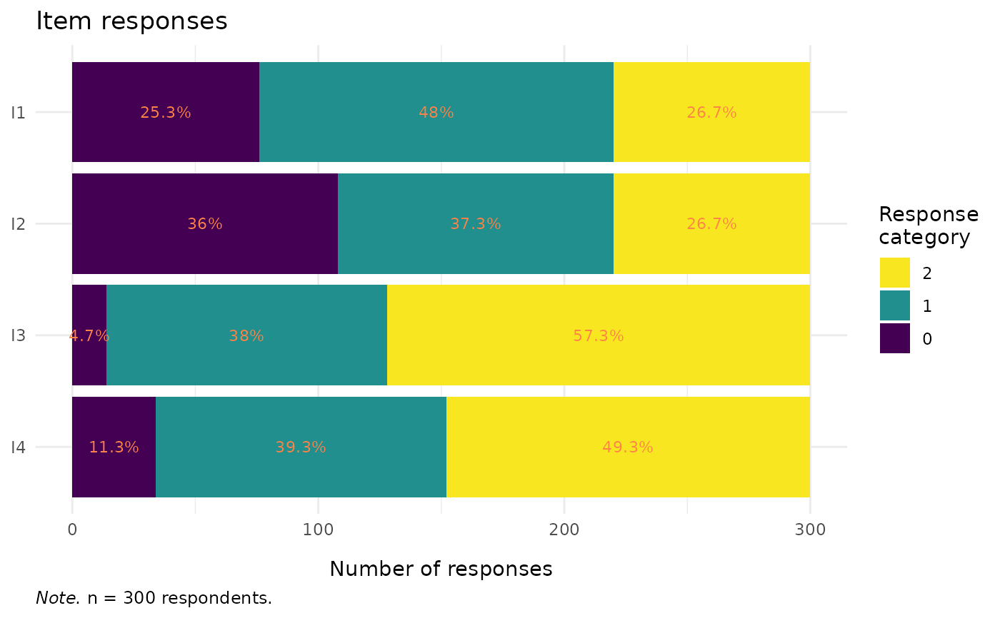

Creates a horizontal stacked bar chart showing the response distribution for all items. Each bar represents one item, with segments coloured by response category. Counts are displayed as text labels within each segment. This is a descriptive data visualization tool intended for use before model fitting.
Usage
RMplotStackedbar(
data,
item_labels = NULL,
category_labels = NULL,
show_n = TRUE,
show_percent = FALSE,
text_color = "sienna1",
text_size = 3,
min_label_n = 0L,
viridis_option = "D",
viridis_end = 0.99,
title = "Item responses"
)Arguments
- data
A data.frame in wide format containing only the item response columns. Each column is one item, each row is one person. All columns must be numeric (integer-valued). Response categories may be coded starting from 0 or 1. Do not include person IDs, grouping variables, or other non-item columns.
- item_labels
An optional character vector of descriptive labels for the items (y-axis). Must be the same length as
ncol(data). IfNULL(the default), column names are used.- category_labels
An optional character vector of labels for the response categories (legend). Must be the same length as the number of response categories spanning from the minimum to the maximum observed value, ordered from lowest to highest category. If
NULL(the default), numeric category values are used.- show_n
Logical. If
TRUE(the default), the count of responses is displayed as a text label inside each bar segment.- show_percent
Logical. If
TRUE, the percentage of responses is displayed instead of (or in addition to) counts. Default isFALSE.- text_color
Character. Colour for the count/percentage labels. Default is
"sienna1".- text_size
Numeric. Size of the count/percentage labels. Default is
3.- min_label_n
Integer. Minimum count required for a label to be displayed within a bar segment. Segments with fewer responses are left unlabelled to avoid clutter. Default is
0L(all segments labelled).- viridis_option
Character. Viridis palette option. One of
"A"through"H". Default is"D".- viridis_end
Numeric in \([0, 1]\). End point of the viridis colour scale. Default is
0.99.- title
Character. Plot title. Default is
"Item responses".
Value
A ggplot2::ggplot object.
Details
Items are displayed on the y-axis in the same order as the columns
in data (first column at the top). Each bar is divided into
segments representing response categories, with the lowest category
on the left and the highest on the right. The total bar length
equals the number of non-missing responses for that item.
Categories with zero responses still appear in the legend but produce no visible bar segment, which helps identify gaps in the response distribution.
The plot caption reports the sample in the standard
n = X respondents (policy) form; item-level NAs are retained –
each bar counts the non-missing responses for that item.
Input requirements:
All columns must be numeric (integer-valued).
The data frame must contain at least 2 columns (items) and at least 1 row (person).
Examples
if (requireNamespace("eRm", quietly = TRUE) &&
requireNamespace("ggplot2", quietly = TRUE)) {
data(pcmdat2, package = "eRm")
# Basic stacked bar chart
RMplotStackedbar(pcmdat2)
# With custom item and category labels
RMplotStackedbar(
pcmdat2,
item_labels = c("Mood", "Sleep", "Appetite", "Energy"),
category_labels = c("Never", "Sometimes", "Often")
)
# Show percentages, suppress small segments
RMplotStackedbar(
pcmdat2,
show_percent = TRUE,
show_n = FALSE,
min_label_n = 5
)
}
